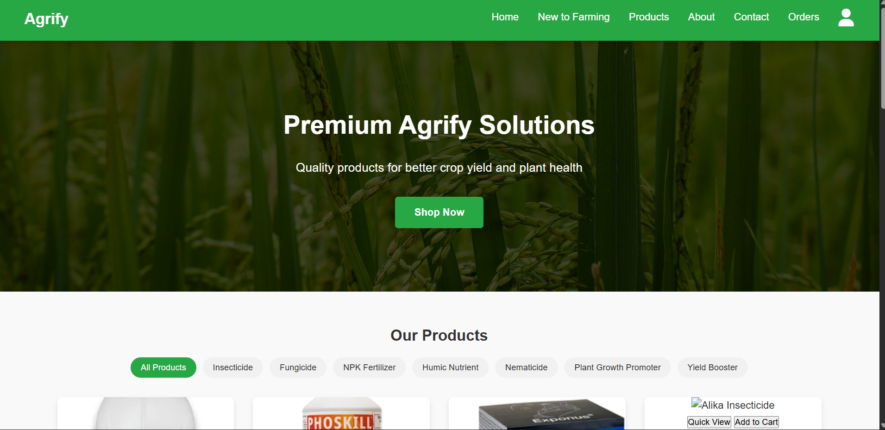

Agrify – Smart Agriculture Platform
Modern agriculture-focused web platform designed to support farmers through digital services, expert guidance, and responsive UI/UX experiences.
Selected AI/ML, full stack, Web Development and tooling projects which makes life better.